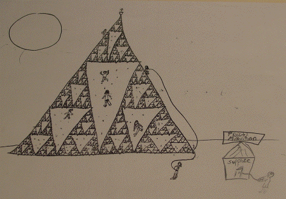

|  |
| Click the picture for a larger version, in a new window. |
This picture was drawn by Stephanie Davis, a fourth grader. Her babysitter, Meghan Gallagher, learned some fractal geometry in Phyllis Pruzinsky's class, and taught Meghan to draw the Sierpinski gasket. Evidently, the idea of repeating patterns on smaller scales was very natural for Stephanie. Not only did she understand the idea, she also embellished on it, making the gasket into a mountain.
In opposition to the notion that fractal geometry is complicated and difficult to grasp, we hold the view that make sense to children, at some fundamental level. This is one of the best examples we have seen.